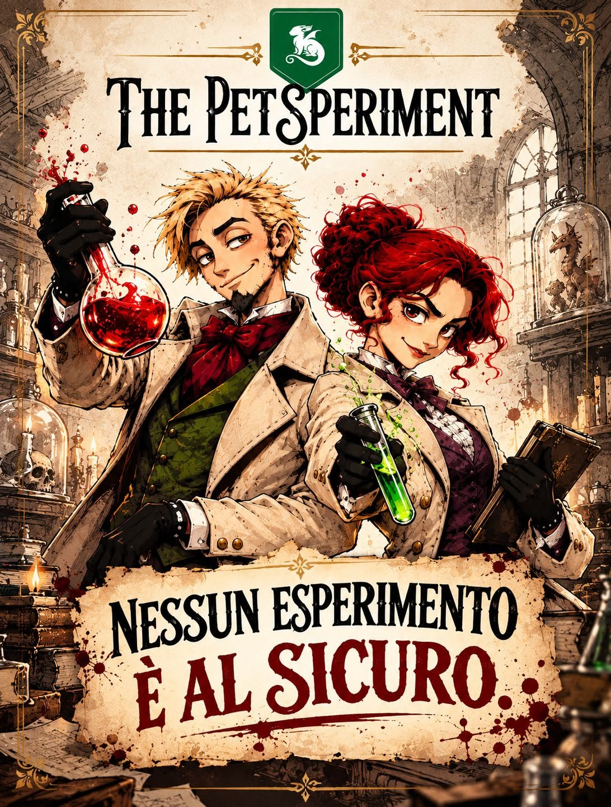
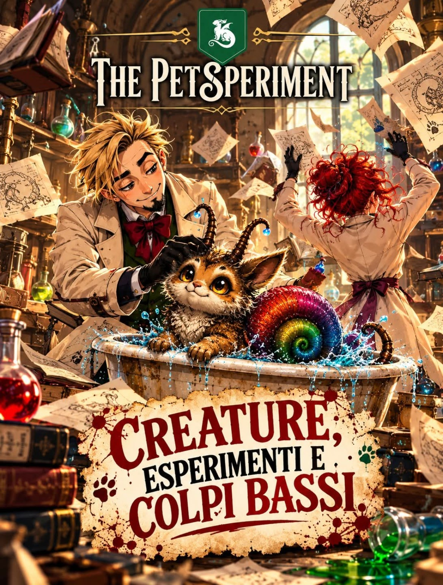
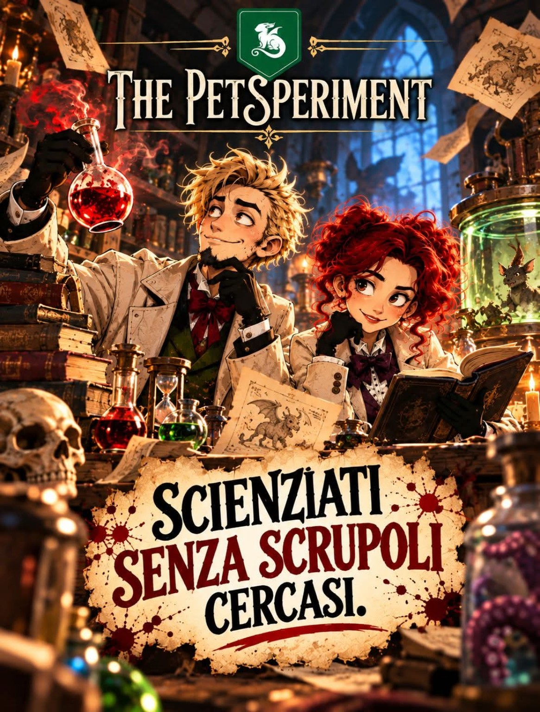

Ogni scienziato ha il suo obiettivo.
Prendi una plancia e scegli la tua Creatura obiettivo. Hai una sequenza da completare e quattro carte Azione con cui iniziare.
Dai vita alla tua creatura prima degli altri.
Facile? Sì. Finché i tuoi amici non ci mettono lo zampino.



In The Petsperiment ogni esperimento cresce sotto gli occhi di tutti. Mentre tu prepari la vittoria, qualcuno sta già preparando il tuo prossimo imprevisto.
Prendi una plancia e scegli la tua Creatura obiettivo. Hai una sequenza da completare e quattro carte Azione con cui iniziare.
Pesca un Esperimento. Se è il prossimo Esperimento richiesto dalla tua sequenza, piazzalo. Poi pesca un’Azione e decidi se giocarla o passare.
Completa i tre Esperimenti e aggiungi una Creatura. È quella del tuo obiettivo? Hai vinto. È un’altra? Gli avversari possono ancora reagire.
Raccogli i tre Esperimenti nell’ordine indicato sulla tua plancia. Ecco da vicino le nuove grafiche.
Effetto in Archivio: invece di pescare un Esperimento, sposta questo Esperimento dall’Archivio alla Plancia.
Sei sequenze possibili. Una plancia per giocatore. E quel momento in cui tutti capiscono che sei a un passo dalla vittoria.
Plance, mazzi Esperimento e Azione, Creature e Scienziati: una foto reale del gioco.
Tocca la foto per guardarla da vicino.Occhioni innocenti. Combinazioni decisamente improbabili. Nel mazzo ci sono sette creature diverse: eccone due che non sono riuscite a restare nascoste.
Hai trovato l'Esperimento che cercavi? Magnifico. Vediamo quanto dura sulla Plancia!
Chi può rovinare tutto?Una scossa, una provetta… e la creatura prende vita. ⚡🧪🧬
Benvenuti a The PetSperiment.
Il gioco di carte presentato in 10 secondi!
Ruba un Esperimento. Elimina quello di un avversario. Scambia le plance.
Una sola Azione per turno può cambiare parecchie cose.
Non tutte le carte pescate sono una buona notizia. KAOS, BOOM e Vertigo si attivano appena compaiono. Il laboratorio aveva altri piani.
Scegli un imprevistoUn Evento nel mazzo Esperimenti. Appena lo peschi, si attiva: nessuno ha detto che il laboratorio fosse un posto tranquillo.
Il gioco base è completo e si gioca anche senza moduli. Quando vuoi aggiungere nuove possibilità, scegli il modulo Scienziati, la modalità Archivio oppure entrambi.
Ogni giocatore riceve uno dei 12 Scienziati, assegnato casualmente. Ciascuno ha un’abilità diversa, che si attiva quando sulla plancia sono presenti gli Esperimenti richiesti.
Una carta Esperimento non è utile alla tua sequenza? Puoi conservarla nello slot Archivio, visibile a tutti, invece di scartarla. Più avanti potrai attivare il suo effetto.
27 carte Esperimento 8 effetti da scoprire
Sono Nicolò Rocco Alessandro, autore del gioco. Sto cercando un partner editoriale con cui portare questo laboratorio sui tavoli di nuovi giocatori.
The Petsperiment è un gioco di carte competitivo, con interazione diretta e colpi bassi: semplice da imparare nel gioco base, con due moduli opzionali per aggiungere nuove possibilità. È già stato provato dal pubblico al TO Play di Torino.
Se sei un editore interessato a The Petsperiment, scrivimi. Possiamo approfondire il gioco, concordare una prova e parlare di una possibile collaborazione.
Proponi una collaborazione editorialethepetsperiment@gmail.comNicolò Rocco Alessandro · AutoreProva dal tuo smartphone il gioco base e scopri quanto può cambiare una partita quando qualcuno si mette in mezzo.
Prova la versione per smartphone